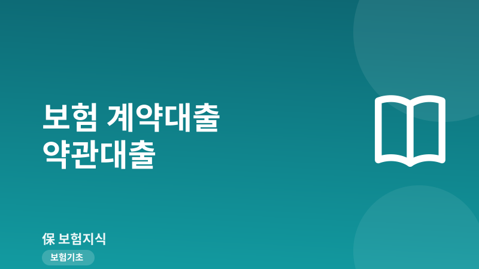
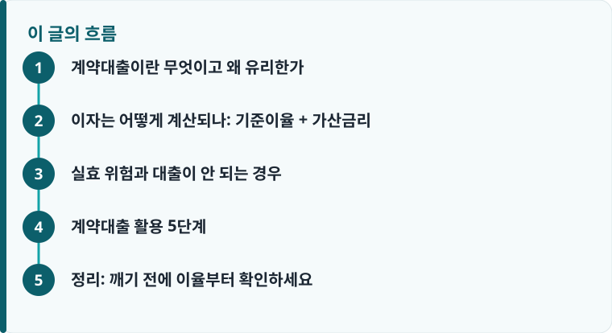

계약대출은 보험을 해지하지 않고 해지환급금의 50~95% 범위에서 보험사로부터 빌리는 제도로, 신용조회·소득심사 없이 대개 당일 실행됩니다.
적용이율은 ‘내 보험의 기준이율 + 가산금리(약 1.5~2.5%p)’로 정해져, 과거 고금리 확정형 상품일수록 대출 이율도 높습니다.
이자를 안 내면 원금에 더해져 불어나고, 원리금이 해지환급금을 넘으면 계약이 자동 해지(실효)돼 보장까지 사라질 수 있습니다.
계약대출이란 무엇이고 왜 유리한가
계약대출은 흔히 ‘약관대출’이라고도 부르는데, 내가 가입한 보험을 해지하지 않고 그 보험의 해지환급금 범위 안에서 보험회사로부터 돈을 빌리는 제도입니다. 한도는 상품과 약관에 따라 다르지만 보통 해지환급금의 50~95% 수준으로 정해집니다. 즉 지금까지 쌓인 내 환급금이 담보 역할을 하는 셈이라, 은행 신용대출이나 카드론과 달리 신용조회나 소득심사 절차가 없습니다. 그래서 소득 증빙이 어렵거나 신용점수가 걱정되는 상황에서도 신청이 가능하고, 서류가 간단해 대출 실행도 대개 신청 당일에 이뤄집니다. 중도상환수수료가 없어 여윳돈이 생기면 아무 때나 일부 또는 전액을 갚을 수 있다는 점도 은행 대출과 크게 다릅니다.
가장 중요한 특징은 ‘해지가 아니라 대출’이라는 점입니다. 보험을 순수하게 해지하면 그 순간 보장이 사라지고, 나중에 다시 가입하려면 나이가 올라가 보험료가 비싸지거나 병력 때문에 아예 가입이 거절될 수도 있습니다. 반면 계약대출은 계약을 그대로 유지한 채 돈만 빌리는 것이므로 보장 공백이 전혀 생기지 않습니다. 대출을 받는 동안에도 진단비·수술비 같은 보장은 그대로 살아 있습니다. 목돈이 급하다는 이유만으로 보험을 깨기 전에, 해지 대신 유지할 수 있는 해지하지 않고 보험을 유지하는 방법을 먼저 검토해야 하는 이유가 여기에 있습니다.
이자는 어떻게 계산되나: 기준이율 + 가산금리
계약대출도 엄연히 ‘대출’이라 이자가 붙습니다. 적용이율은 대체로 ‘기준이율 + 가산금리’ 구조로 정해집니다. 여기서 기준이율은 내 보험에 적용되는 적립이율이나 공시이율처럼 그 계약이 스스로 굴러가는 이율을 말하고, 가산금리는 보험사가 대출 취급 비용 등으로 얹는 마진으로 보통 1.5~2.5%p 수준입니다. 이 구조 때문에 같은 계약대출이라도 상품에 따라 이율 차이가 큽니다. 과거에 팔린 고금리 확정형 상품, 예컨대 적립이율이 높게 확정된 오래된 저축성·종신보험이라면 기준이율 자체가 높아 계약대출 이율도 함께 높아집니다. 반대로 최근의 저금리 상품은 기준이율이 낮아 대출 이율도 상대적으로 낮게 나옵니다. 그래서 “계약대출은 무조건 싸다”고 단정하기 어렵고, 신청 전에 내 증권의 적용이율을 반드시 확인해야 합니다.
이자를 다루는 방식에서 특히 주의할 점이 있습니다. 계약대출 이자는 반드시 내야 하며, 만약 이자를 내지 않으면 그 미납이자가 대출 원금에 더해집니다. 그다음 회차에는 불어난 원금을 기준으로 다시 이자가 계산되기 때문에, 사실상 복리처럼 빚이 커지는 구조가 됩니다. 처음에는 적은 금액이라도 이자를 방치하면 원리금이 생각보다 빠르게 늘어날 수 있습니다. 따라서 원금을 당장 갚기 어렵더라도 이자만큼은 주기적으로 상환해 원금이 불어나지 않도록 관리하는 것이 핵심입니다. 보험 상품 종류에 따라 환급금 구조가 다르므로, 내 상품이 어떤 유형인지 헷갈린다면 만기환급형과 순수보장형의 차이를 함께 확인해 두면 판단이 쉬워집니다.

실효 위험과 대출이 안 되는 경우
계약대출에서 가장 큰 주의점은 ‘실효(자동 해지)’ 위험입니다. 앞서 설명한 대로 이자를 계속 내지 않으면 원리금이 쌓여 가는데, 이 원리금이 내 해지환급금을 초과하는 순간 담보가 부족해져 계약이 자동으로 해지될 수 있습니다. 계약이 실효되면 빌린 돈을 갚을 재원이 없어지는 것은 물론이고, 유지하려던 보장까지 통째로 사라집니다. 급전을 위해 대출을 받았다가 정작 지키려던 보험을 잃는 최악의 상황이 되는 것입니다. 이를 막으려면 대출 잔액이 환급금 대비 얼마나 되는지 주기적으로 살피고, 최소한 이자는 꾸준히 상환해 원금이 불어나지 않게 해야 합니다. 실효가 걱정된다면 해지 전에 점검할 항목을 정리한 보험 리모델링 전 해지 점검도 함께 참고할 만합니다.
모든 보험이 계약대출을 받을 수 있는 것은 아닙니다. 계약대출은 해지환급금을 담보로 하므로, 애초에 해지환급금이 없거나 매우 적은 순수보장형 상품은 대출이 안 되거나 한도가 아주 작습니다. 예컨대 보험료 전액이 위험보장에만 쓰이는 소멸성 담보나 갱신형 실손·정기보험은 쌓이는 적립금이 거의 없어 계약대출 대상에서 빠지는 경우가 많습니다. 또 대출을 낀 상태에서 보험사고가 발생해 보험금이나 해지환급금을 받게 되면, 보험사는 대출 원리금을 먼저 차감한 뒤 남은 금액만 지급합니다. 즉 대출을 많이 받아 둔 상태라면 정작 사고 시 손에 쥐는 보험금이 줄어들 수 있다는 점을 염두에 둬야 합니다.
비슷해 보여 자주 혼동되는 두 가지도 구분해 두면 좋습니다. 첫째, ‘자동대출납입(APL)’은 보험료를 낼 여력이 없을 때 그 보험료를 계약대출로 자동 납입해 실효를 막아 주는 기능으로, 내가 직접 목돈을 빌려 쓰는 계약대출과는 목적이 다릅니다. APL도 결국 대출이라 이자가 붙고 원리금이 쌓인다는 점은 같습니다. 둘째, ‘중도인출’은 유니버셜 상품 등에서 내가 쌓아 둔 적립금 일부를 빼내는 것으로, 내 돈을 꺼내 쓰는 것이라 원칙적으로 이자가 붙지 않습니다. 반면 계약대출은 ‘빌리는 것’이라 이자가 발생합니다. 목돈이 필요할 때 중도인출이 가능한 상품이라면 이자 부담 없이 인출부터 검토하는 것이 유리할 수 있습니다.
작성·검수 기준
이 글은 특정 보험사의 상품이나 대출을 권유하기 위한 것이 아니라, 보험 계약대출(약관대출)의 구조와 위험을 일반적인 약관 기준으로 설명하기 위해 작성했습니다. 계약대출 한도(해지환급금의 50~95%), 적용이율(기준이율 + 가산금리), 실효 조건, 대출 가능 여부는 가입 상품과 약관, 신청 시점에 따라 달라질 수 있는 일반 정보입니다.
본인의 정확한 대출 한도와 적용이율은 반드시 가입한 보험의 증권과 약관, 상품설명서에서 확인해야 하며, 상품 유형에 따른 환급금 차이는 만기환급형과 순수보장형의 차이를 함께 참고하는 것이 정확합니다.
계약대출 활용 5단계
보험을 깨지 않고 계약대출로 급전을 마련하기로 했다면, 다음 순서로 확인하면 위험을 크게 줄일 수 있습니다.
- 내 증권이나 보험사 앱·고객센터에서 현재 해지환급금과 계약대출 가능 한도(보통 환급금의 50~95%)를 먼저 확인합니다.
- 내 상품에 적용되는 계약대출 이율(기준이율 + 가산금리)을 확인하고, 은행 신용대출·카드론 금리와 비교합니다.
- 필요한 만큼만 대출받되, 원리금이 해지환급금에 가까워지지 않도록 한도를 여유 있게 남겨 둡니다.
- 대출 실행 후에는 최소한 이자만이라도 주기적으로 상환해, 미납이자가 원금에 더해져 불어나는 것을 막습니다.
- 여윳돈이 생기면 중도상환수수료가 없다는 점을 활용해 수시로 원금을 갚아 실효 위험을 줄입니다.
정리: 깨기 전에 이율부터 확인하세요
목돈이 급하다고 보험부터 해지하면 낮은 이율의 급전 창구와 소중한 보장을 한꺼번에 잃을 수 있습니다. 계약대출은 신용조회 없이 해지환급금 범위에서 빌려 보장을 유지한 채 자금을 마련하는 좋은 대안이지만, 이자를 방치하면 원리금이 불어나 실효로 이어질 수 있다는 점을 늘 기억해야 합니다. 특히 확정형 고금리 상품이라면 계약대출 이율이 의외로 높을 수 있으니, 신용대출·카드론과 이율을 비교한 뒤 결정하세요. 자금이 필요해진 원인이 보험료 부담이라면, 대출에 앞서 청약철회와 보험료 환급 요건에 해당하는지도 확인해 볼 수 있습니다.
다른 보험 정보 글이 궁금하다면 보험지식 블로그에서 이어 읽어 보세요. 가입 전에는 반드시 약관과 상품설명서를 확인하는 것이 가장 안전한 방법입니다.